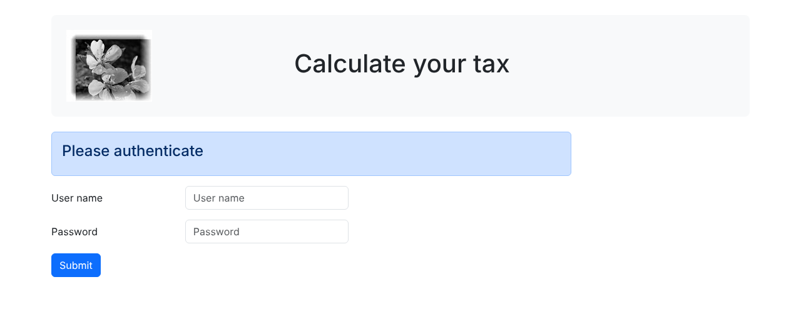
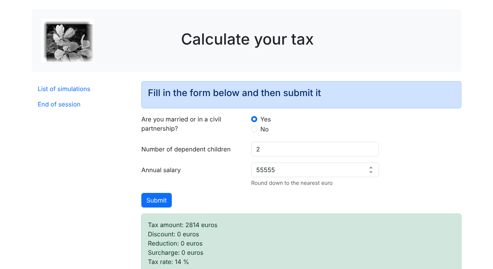

24. Practical Exercise – Version 13
Version 13 introduces few changes: it secures access to the application’s files. It adds no new features: the actions, the responses JSON, XML, and HTML, and the views are the same as in version 12. What has changed is the file structure on the disk and the configuration of the [Apache] server.
24.1. The Problem
In Course PHP 7, you could request the URL of the version 12 configuration file, and the browser would display it. However, this [config.json] file contains sensitive information, such as the credentials of users authorized to use the application. It must not be accessible to users.
In our version 12, this file is already protected: it is located in the [Data] folder, to which the [.htaccess] file—introduced with version 8—denies access ([Require all denied] directive). However, this protection is applied on a case-by-case basis: we block only what we’ve specifically chosen to block, and everything else is served. Yet there are still many things that should not be displayed. For example, the browser may request a view directly, without going through the main controller:
The view is executed out of context: the variables normally provided by the [HtmlResponse] class do not exist. Since [Laragon] is configured for development (directive [display_errors=On] from PHP), error messages are sent to the browser. They reveal the file paths on the server, as well as the names of the functions and classes used—all of which is useful information for anyone seeking to attack the application. Secondary controllers, response classes, and the classes in the [business] and [dao] layers can likewise be executed by a simple URL. Here, they merely define a class, but there is no guarantee that this will always be the case.
More seriously: the entire [php8-oct-2026] folder for the course is located inside the [www] folder of [Laragon]. The console script files are also accessible via the web, even though no one thought to protect them:
Anyone can read the username and password for the [dbtaxes-2019] database user. However, server versions 8 through 12 use this file or its equivalent.
The correct approach is the opposite: block everything by default, then explicitly allow only what needs to be accessible from the outside. For our application, only three files need to be accessible:
- [main.php], the main controller, which receives all requests;
- [index.php], the entry point for the application HTML, which redirects to [main.php];
- the image [logo.jpg], which the browser requests via a HTTP request when it displays the view banner.
24.2. The new directory structure
We copy and paste the [scripts-web/tax/version-12] folder into [scripts-web/tax/version-13], then reorganize its files:
- into [public], the only folder that will be accessible via the web. It contains the two scripts [index.php, main.php] and, in the [Resources] folder, the image [logo.jpg]. The name [public] is the one used by current PHP frameworks (Symfony, Laravel) for this same role;
- In [Config], the configuration files: [config.json] (formerly [Data/config.json]) and [database.json], and the database configuration that was taken from the [Data] folder in version 8. The file [vhost-tax-v13.conf] will be presented at the end of the chapter;
- in [Logs], the log file, which was in the [Data] folder;
- and in [Model], the layer classes [business] and [dao] from the server. Until now, they were loaded from the version 8 and 9 folders. They have now been copied to the version 13 folder, along with the features [TaxException, TaxAdminData, Database] (version 5) and the utilities [Logger, SendAdminMail] (version 9), [XmlUtilities] (version 11), and [Utilities] (version 5). The [version-13] folder thus contains the entire application: this is the only folder that would be copied to a production server, without relying on folders from other versions;
- the [Tests] folder from version 12, which contained the test pages for the views, is not included: these pages would no longer be accessible via the web anyway.
The names of these files do not change, nor does their content, with three exceptions that we will now discuss. Only the Composer library [vendor] remains in its original location, at the root of the [php8-oct-2026] folder.
24.3. Code Changes
24.3.1. The configuration file
The file [Config/config.json] becomes the following:
- line 2: the database configuration file is now in the application’s [Config] folder;
- Lines 3–33: All application files are located in the version 13 folders. The paths are relative to the application’s root folder, the [version-13] folder;
- line 49: the log file is in the [Logs] folder.
24.3.2. The main controller [public/main.php]
The main controller has been moved to the [public] folder. Only two lines have changed:
- Line 18: The constant [ROOT_DIRECTORY] still refers to the application’s root folder, relative to which the paths in the [config.json] file are defined. Since the script is now in the [public] folder, this root folder is the parent folder of [__DIR__]. You cannot write [dirname(__DIR__)]: the value of a constant declared with [const] must be a constant expression, and a function call is not one. The concatenation of [__DIR__] (a constant) and a string is a constant expression;
- line 20: the new path to the configuration file;
- line 23: this line does not change: the path to the Composer loader is relative to the application’s root directory, which is always [scripts-web/tax/version-13].
The script [public/index.php] is the one from version 12. Its redirection to the relative path URL via [main.php?action=init-session&type=html] remains correct since [index.php] and [main.php] are in the same folder.
24.3.3. The views banner
The views remain in the [Views] folder, outside the [public] folder: they are included by the [HtmlResponse] class with a disk path ([__DIR__ . "/../Views/$view"]), and are not requested by the browser. Only the fragment [v-banner.php] changes, because the logo has been moved:
- Line 9: The logo's URL is related to the URL of the displayed page, which is always that of the main controller, [.../version-13/public/main.php]. The browser will therefore request the URL and [.../version-13/public/Resources/logo.jpg].
24.4. The application’s [.htaccess] file
With [Laragon], the document root of the [Apache] server ([DocumentRoot] directive) is the [www] folder. Therefore, everything under [www] can be accessed by a URL, and in particular the entire [version-13] folder. To restrict access to everything not contained in the [public] folder, we use a single [.htaccess] file, located at the root of the application, within the [version-13] folder. Note that the directives in a [.htaccess] file apply to the folder containing it and all its subfolders. [Laragon] configures [Apache] to read these files ([AllowOverride All] directive):
Comments
- Line 5: When a URL specifies a folder that does not have a default document ([index.php], [index.html]), [Apache] can display the list of files in the folder. The [Options -Indexes] directive prevents this;
- Line 8: We use the [mod_rewrite] module from [Apache], the rewriting module for URL, which is enabled by default in [Laragon]. A [RewriteRule] rule has the form [RewriteRule pattern substitution [options]]. In a [.htaccess] file, the pattern—a regular expression—is compared to the path of the requested URL relative to the directory of the [.htaccess] file. For URL and [http://localhost/php8-oct-2026/scripts-web/tax/version-13/Config/config.json], this path is [Config/config.json];
- Lines 11–12: The first rule processes the URL file from the [.../version-13/] application folder, whose relative path is empty (pattern: [^$]). It redirects the browser (option [R=302]) to the [public] folder and stops processing the rules (option [L], for “last”). The substitution must be a complete URL path: it is obtained from the variable [REQUEST_URI] of [Apache], the path of the requested URL [/php8-oct-2026/scripts-web/tax/version-13/]. The condition [RewriteCond] preceding the rule compares this variable to the regular expression [^(.*)/$]: the portion in parentheses—the path without the trailing /—is then available in the rule under the name [%1]. Thus, the file [.htaccess] does not depend on the application’s location in the [www] folder;
- Line 14: The second rule applies to any URL whose relative path does not begin with [public/] and is not exactly [public]: this is the meaning of the [!] placed before the pattern. The substitution [-] means “no substitution,” and the option [F] (for “forbidden”) causes [Apache] to be mapped to the code [403 Forbidden]. The URL [.../version-13/public], without the trailing /, must remain allowed: [Apache] (module [mod_dir]) responds to it with a redirect to [.../version-13/public/].
This file also blocks access to itself: it is not located in the [public] folder. Since the path to a URL is normalized to [Apache] before the rules are applied, a URL—like a [.../version-13/public/../Config/config.json]—is also denied.
The PHP 7 course placed a [.htaccess] file containing the two lines [order deny,allow] and [deny from all] in each of the folders to be protected. This is the syntax of [Apache] 2.2. [Apache] 2.4 now accepts it only through the [mod_access_compat] compatibility module, which is scheduled to be phased out. The syntax for [Apache] 2.4 is [Require all denied], which we have been using since version 8.
If you do not want to use the [mod_rewrite] module, one possible alternative uses two [.htaccess] files and the [Require] syntax:
- in the [version-13] folder, a file named [.htaccess] containing only the line [Require all denied]: everything is prohibited;
- in the [public] folder, a file named [.htaccess] containing only the line [Require all granted]: the permission settings of a subfolder override those of the parent folder, and all content in [public] is permitted.
This variant also works, but the URL [.../version-13/] is then denied access instead of being redirected to the [public] folder.
24.4.1. [curl] Tests
Application files outside the [public] folder are rejected:
The code [403 Forbidden] corresponds to the second rule. Note that the view [view-tax-calculation.php] was not even executed. The files in the folder [public] are served:
- lines 1–11: the main controller responds normally: the JSON session is started;
- lines 13–20: the logo is served (type [image/jpeg]).
Finally, the application’s URL is redirected to the [public] folder, whose [index.php] script in turn redirects to the main controller:
- Line 4: the redirection of the first rule in the [.htaccess] file;
- line 11: the redirection from the script [public/index.php].
In a browser, the URL that launches the HTML application becomes [http://localhost/php8-oct-2026/scripts-web/tax/version-13/]. After the two redirects, the authentication page appears, along with its logo:

The application works the same as the one in version 12. Here is the tax calculation screen after a simulation:

The URL client requests for JSON and XML have changed: the primary controller is now [.../version-13/public/main.php]. To use the JSON client from version 12 with the version 13 server, simply change the [urlServer] key in its configuration file.
24.5. In production: the document root is the [public] folder
The [.htaccess] file is a solution adapted from [Laragon], where a single folder, [www], contains multiple applications. On a production server, the approach is different: the [public] folder is made the document root for the site. The rest of the application is then outside the website’s directory structure: no URL can access it, and no rules are necessary. This is the organization recommended by the PHP frameworks.
With [Apache], you define a virtual host, i.e., for this purpose—an additional website served by the same server, [Apache]. The file [Config/vhost-tax-v13.conf] provides an example:
- Line 4: [Apache] also listens on port 8013. A virtual host can be distinguished from others by its port, as shown here, or by its name ([tax.test], for example). Using the port avoids having to declare a new hostname;
- Lines 5–14: The configuration of the virtual host that responds to requests received on port 8013;
- line 7: The document root for this site is the [public] folder in version 13. URL and [http://localhost:8013/main.php] therefore refer to the file [public/main.php];
- Lines 8–13: Access rights to the [public] folder. [AllowOverride None] tells [Apache] that it does not need to search for [.htaccess] files: the entire configuration is here, which is also faster.
In [Laragon], place such a file—adjusting the paths to the installation folder of [Laragon]—in the [<laragon>/etc/apache2/sites-enabled] folder, then restart [Apache] from the [Laragon] window (click the [Stop] button, then the [Start All] button). You will then have:
- lines 1–6: the site’s URL is served by the [public/index.php] script;
- lines 8–9: the main controller responds normally;
- lines 11–18: the logo is served;
- lines 20–23: the configuration file is no longer rejected; it simply does not exist for the web server: the response is [404 Not Found]. The file [.htaccess] in the [version-13] folder is not read, since it is outside the document root.
In both cases—whether it’s [Laragon] with the file [.htaccess] or a virtual host whose root is the folder [public]—the application code is the same. That is the benefit of the new directory structure: public content is gathered in a single folder, and everything else is protected by default.